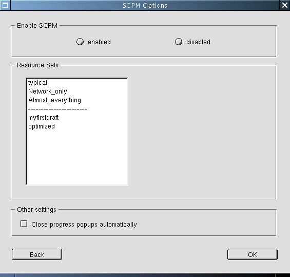

The options dialog is entered from the main dialog by clicking the Options button.
approved HelptextFirst, enable SCPM. If disabled later, none of your configuration data in the profiles will be lost. It just keeps the current configuration of your system and you cannot switch to any other profile until you enable it again. A configuration profile covers only the files and services to change when
switching to another profile. In SCPM terminology, these files and services are
called resources. Choose a resource set from the list. You may create your own individual resource set, but currently not with YaST2. See info scpm for information. Your manually created resource sets will then be available in this list as well. If you change the used resource set, all resources that will be deleted from the profiles are backed up below /var/lib/scpm/backup/. For progress windows to close automatically, check Close progress pop-ups automatically. This box is also available in the progress pop-ups themselves. |
 |
This dialog lets the user alter the global SCPM configuration. Up to now there is only the possibility to enable or disable SCPM, and to choose a Resource Set. Other options may follow.
You need to determine wether SCPM is already enabled and
initialized. This information is located in the
scpm_status_t
struct, namly in
scpm_status_t::initialized and
scpm_status_t::enabled
. This information will also be needed when the user clicks ok.
The defined Resource Sets can be determined by calling
SCPM::ListResourceSets.
You get two different list, one for predefined Resource Sets, and one
for individual Resource Sets. These two lists get written to the list
box, and should be separated by a line containing dashes (see picture).
You can query the active Resource Set by calling
SCPM::GetResourceSet.
The Close progress popups automatically flag is taken from and
saved to some YaST2 configuration space as it is front end specific
anyway.
SCPM::Enable. In case SCPM
has already been initialized, that means,
scpm_status_t::initialized
is true, this will be non thrilling. In case it
wasn't, SCPM will create its database and stuff, therefor we need the
progress popup here. In case the
user switched from enabled to disabled, just call
SCPM::Disable.
In case the user switched to another Resource Set, just set it calling
SCPM::SetResourceSet.
Changing the Resource Set usually entails major database modifications.
SCPM can perform these changes, the function for this is
SCPM::RebuildDB. Calling
this may heavily change the database and may even remove data, so it would
be a good idea to let the user confirm that.
After everything is done, back to the main
dialog.